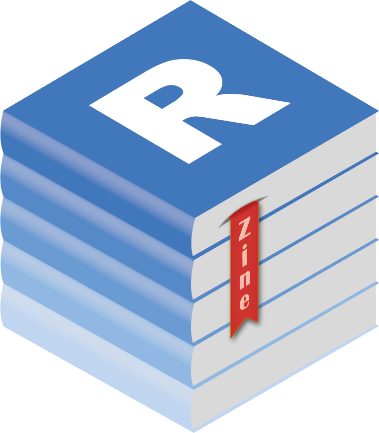

Rzine
Pour la diffusion et le partage de ressources
sur la pratique de R en sciences humaines et sociales
sur la pratique de R en sciences humaines et sociales

Journées annuelles du réseau Mate-SHS, 16 mai 2022
Hugues Pecout - Timothée Giraud